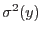
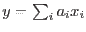
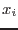
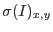
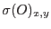

The user has the opportunity both to supply a variance image of the input and to receive a variance image of the smoothed output. (A variance image is an image of the variances, that is the squares of the standard deviations, in the values of the input or output images.) A variance image is supplied by setting parameter readvarianceset=`yes' and naming the image dataset in invarianceset; the variance of the outset can be obtained via parameters writevarianceset and outvarianceset.
If the task is required to make use of the variance (either because the user has set writevarianceset=`yes' or smoothstyle=`adaptive'), but none is supplied by the user, the task assumes that the input image inset is Poissonian - that is, that the image itself is a reasonable estimate of its own variance. In this case naturally only insets with pixel values
In this case naturally only insets with pixel values  are accepted. If a variance set is supplied, all pixel values of the variance image must be
are accepted. If a variance set is supplied, all pixel values of the variance image must be  , but the pixels of inset may have any value.
, but the pixels of inset may have any value.
If writevarianceset=`yes', the task calculates the variance in the smoothed output image outset. The variance  of a linear combination  of independent variates  is given by
(Note there is no connection between the  used here and the
used here and the  used in section 3.3.1 to signify the characteristic width of a gaussian! I'm using the same symbol for two different things, but hopefully this won't be too confusing.) By applying this to equation 1 we get
used in section 3.3.1 to signify the characteristic width of a gaussian! I'm using the same symbol for two different things, but hopefully this won't be too confusing.) By applying this to equation 1 we get
where  is the standard deviation of the input image and  that of the output.